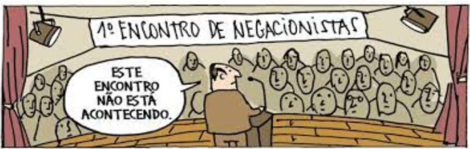

NEGACIONISMO cientifico
Junto do avanço tecnológico e da valorização da ciência, uma densa nuvem de negacionismo pairou sobre o mundo, especialmente em países com governanças autoritárias. O antídoto para este mal seria aproximar a ciência das pessoas. É o que acredita um grupo de estudantes do Programa Interunidades em Ensino de Ciências da USP (PIECE). Desde o ano passado, eles publicam a Revista Balbúrdia, apostando na democratização do conhecimento científico, fornecendo base para a discussão e para o desenvolvimento do pensamento crítico nos sujeitos.